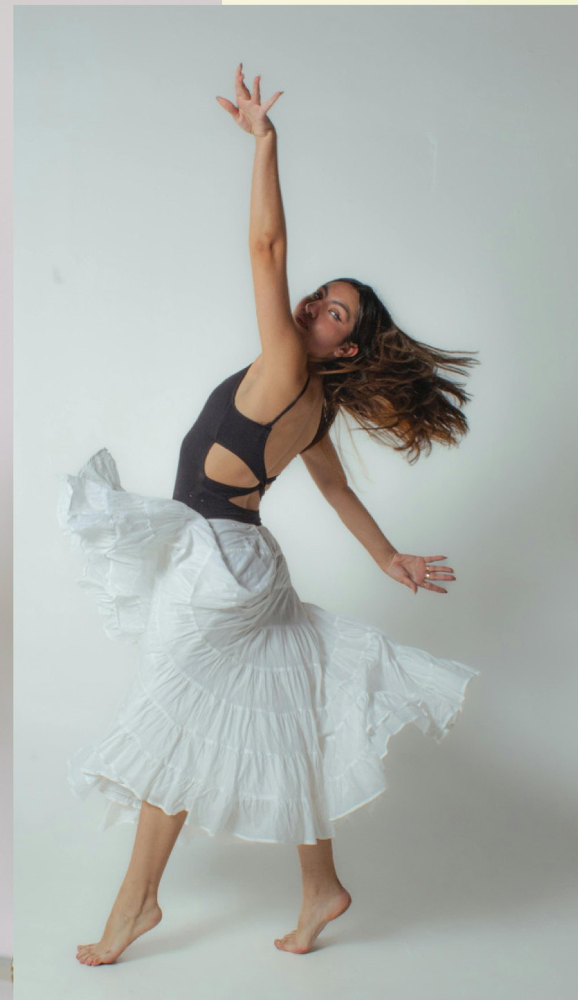

Já, Šárka…
Nejsem jen lektorka tance. Nejsem jen koučka. Nejsem jen byznysová žena. Jsem všechno najednou — a přesně v tom je moje síla.
Kdo jsem
Žena, která se vrátila k sobě
Prošla jsem roky intenzivní kariéry včetně pozice ředitelky. Prošla jsem rozvodem, vyhořením i obdobím, kdy jsem netušila, co dál. A pak jsem se vrátila k tomu, co mě drží od šesti let — k tanci.
Začínala jsem u folklóru, prošla salsou i řadou dalších stylů. Dneska mě nejvíc baví volný pohyb, kde nejde o kroky, ale o to, co člověk cítí.
Dnes propojuju dva zdánlivě odlišné světy — byznys a tanec — do konceptu, který jinde nenajdete.

Co mi dal tanec
Čtyři věci, které mi zůstaly
Tanec má přesah daleko za hranice sálu. Tohle si z něj nesu do práce, do vztahů i do života.
Disciplína
Bez pravidelnosti to nejde. Ani na parketu, ani v byznysu.
Odvaha
Postavit se před publikum se člověk musí naučit. Pak už ho žádná porada nerozhodí.
Zvládání trémy
Nervozita nezmizí. Jde o to, umět s ní pracovat a jít do toho i tak.
Organizovanost
Vystoupení se samo nepřipraví. Naučila jsem se plánovat a dotahovat.
Můj přístup
Nejsem dirigent. Jsem průvodkyně.
Neukazuju vám, jak se to má dělat správně. Pomáhám vám najít, jak se to má dělat u vás.
- Každý kurz šitý na míru. Kopírování u mě nemá místo, protože každá skupina je jiná.
- Neexistuje špatný pohyb. A věta „já neumím tančit“ u mě neplatí. Každý člověk umí svým stylem tančit.
- Tanec, byznys a rozvoj potenciálu v jednom. Vím, co obnáší vést lidi, a vím, co s nimi dokáže hodina pohybu.
- Autenticita a lidskost. Osobní přístup, otevřenost a důvěra. Nic naoko.
„Pohyb má být zdrojem radosti a lehkosti, ne další povinností.“
Čtěte dál — pro milovníky příběhů
Dlouhá léta jsem žila v přesvědčení, že úspěch se měří tím, kolik toho zvládnu. Vedla jsem tým, řešila procesy, čísla a termíny. Fungovala jsem. A dlouho jsem si nevšimla, že fungovat a žít nejsou dvě slova pro totéž.
Přišel rozvod. Přišel odchod z pozice ředitelky. Přišlo období, kdy jsem si poprvé po letech nemusela nic dokazovat — protože už nebylo komu. A v tom prázdném místě se ozvalo něco, co tam bylo celou dobu: pohyb.
Tančím od šesti let. Folklór, sály, zkoušky, vystoupení. Tanec pro mě nikdy nebyl koníček, byl to způsob, jak dýchat. Když jsem se k němu vrátila jako dospělá žena, došlo mi, že mi celé ty roky v kanceláři chyběl přesně ten pocit: být v těle, ne jen v hlavě.
Postupně jsem zjistila, že to, co jsem se naučila v byznysu, a to, co umím z parketu, se nevylučuje. Naopak. Vím, jak vypadá tým před vyhořením. Vím, co znamená, když se lidé na poradě bojí promluvit. A vím, co se s tím dá dělat, když je na chvíli dostanete od stolu a rozhýbete.
Dnes vedu programy pro firmy, workshopy pro ženy a lekce pro děti. Vypadá to jako tři různé světy, ale je to jeden a ten samý princip: dát člověku prostor být sám sebou a najít vlastní rytmus.
Nejde o dokonalý výkon. Jde o autentický projev. A ten umí každý.
S úsměvem vpřed
Pojďme to zažít na vlastní kůži
Napište mi, koho chcete rozhýbat. Připravím program na míru vám, ne šablonu z katalogu.